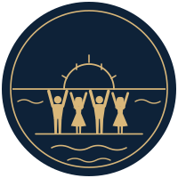

ENTWURF 1
Goldene Linie

64 px
32 px
Tab
Ferienhaus Mallorca 2027
Feine Goldlinien auf Nachtblau, wie das Signet eines Boutique-Hotels. Sonne auf dem Horizont, Wellen unten.
ENTWURF 2
Sonnenuntergang
Vier Silhouetten vor der Abendsonne über dem Meer. Warm, emotional, passt zum Titelbild Sa Foradada.
ENTWURF 3
Abzeichen
64 px
32 px
Tab
Ferienhaus Mallorca 2027
Rundes Abzeichen mit Schriftzug «Mallorca 2027», wie ein Reise-Stempel. Strand, Meer und Sonne innen.